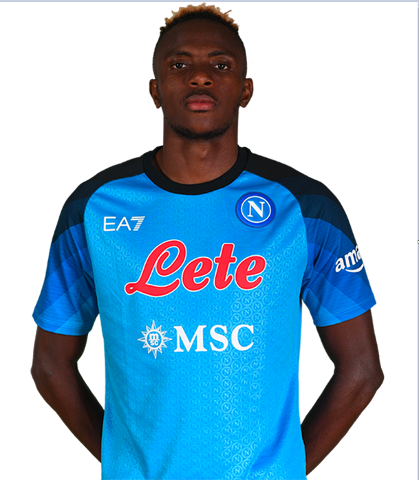

Personal Information
Name: Victor Osihmen
Birthdate: December 29, 1998
Nationality: Nigerian
Height: 185 cm (6 feet, 1 inch)
Position: Forward | #9
About The Player
Victor Osimhen is a Nigerian professional footballer who plays as a forward for the Italian club Napoli and the Nigerian national team. Born on December 29, 1998, in Lagos, Nigeria, Osimhen began his professional career with the Nigerian club Ultimate Strikers Academy before moving to Europe to join Wolfsburg in 2017. However, he struggled to make an impact at the German club and was subsequently loaned out to Charleroi and then to Lille, where he had a breakthrough season in 2019-20. His impressive performances for Lille earned him a big-money move to Napoli in 2020, where he has quickly established himself as one of the team's key players. Osimhen is known for his pace, power, and excellent finishing ability, and he has been compared to the legendary Nigerian striker Rashidi Yekini. He has represented Nigeria at the under-17, under-20, and senior levels and was part of the team that won the Africa Cup of Nations in 2019. At 22 years old, Osimhen is considered one of the most promising young talents in African football and has a bright future ahead of him.
Statistics in All Competetions
Appearances: 29
Minutes Played: 2267
Goals Scored: 25
Assists: 4
Total Shots: 91
Successful Dribbles: 25
Yellow Cards: 5
Red Cards: 0